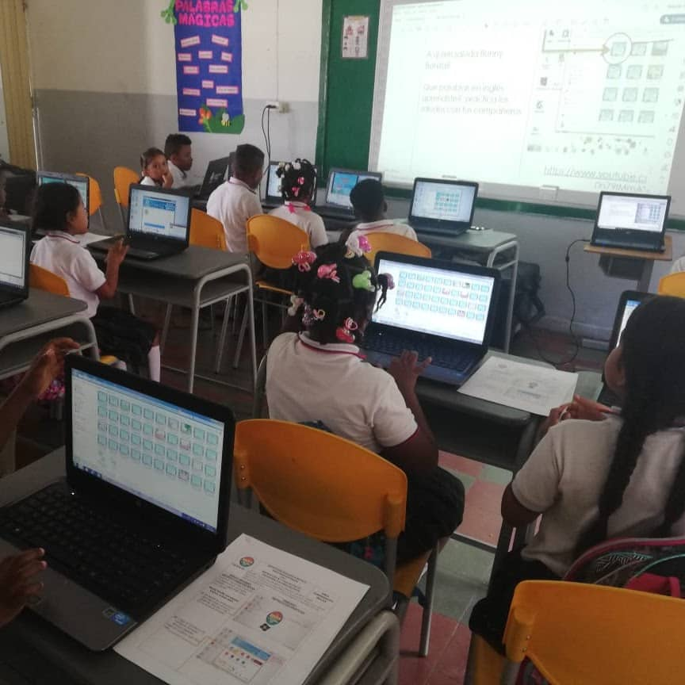
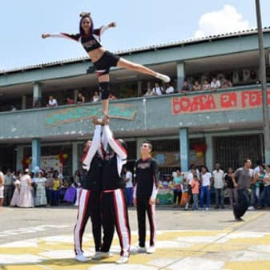
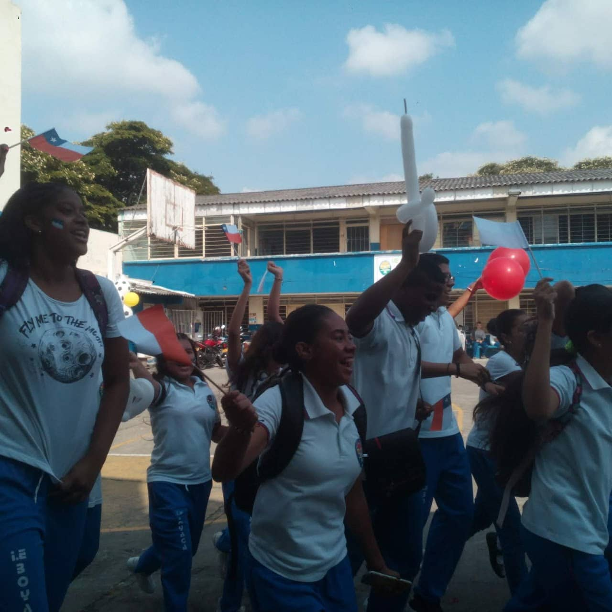

Bienvenidos a la Institución Educativa Boyaca
Contamos con más de 30 años de trayectoria a nivel educativo formando niños y jovenes como lideres de la nueva generación de la ciudad de Santiago de Cali.
A lo largo de estos años, nuestra institucion se ha distinguido por ser una institucion responsable seria y responsable que sigue en crecimiento día a día.
Nos caracterizamos por contar con una alta competencia profesional formando a cada uno de nuestros alumnos, buscando garantizar su bienestar, entregando jóvenes con altas competencias y valores, y desarrollo personal, que confíen en sí mismos así como contar con la sabiduría para respetar a sus semejantes y entablar conversación y trato para con ellos.
Básica Primaria
Básica Secundaria
Educación Media
Proyectos
El Programa de Formación Cultores a través de la Secretaría de Cultura de Santiago de Cali, tiene como propósito impulsar el desarrollo y la formación de públicos creativos para las artes y la cultura en el Distrito de Santiago de Cali, al tiempo que se realizan programas de formación artística en diversas prácticas que fomenten el gusto estético, la apreciación, los sentidos de pertenencia, identidad, convivencia intercultural y construcción de ciudadanía.
Ya está a disposición de todos el libro ‘Patrimonio & Caleñidad: recorrido histórico por instituciones culturales’, por medio del cual se podrá vivenciar la historia patrimonial del ‘Cali Viejo’ que hoy se ha convertido en el Distrito Especial, Deportivo, Cultural, Turístico, Empresarial y de Servicios de Santiago de Cali. Se trata de una edición digital, no comercial, que puede ser descargada gratuitamente desde la página web: www.cali.gov.co/cultura
Vuelve a conectarte con las zonas turísticas más importantes del Oeste de Cali. Participa de las visitas programadas ‘A orillas de La Tertulia’. Un recorrido guiado por los jardines, el complejo arquitectónico del Museo La Tertulia y los hitos que rodean el río Cali. Será un espacio para escuchar la historia de nuestra ciudad desde su desarrollo arquitectónico, la riqueza ecológica, cultural y artística de esta zona de Cali. museolatertulia.com/educacion-visitas-especiales/
¡"Somos" presenta: los mejores 10 vídeos en Stop Motion acerca de la condición humana, realizados por estudiantes de grados 10 y 11 de la IE Boyacá!
Convocatorias
Feria
Mensaje de rectoría
La Coordinación Académica cumple con la función de asesor a nivel institucional lineamientos y estrategias pedagógicas que contribuyen al mejoramiento de la calidad de los procesos académicos y para lograr este objetivo, mediante la revisión y análisis permanente, se busca que la comunidad docente asuma una conciencia crítica acerca del quehacer pedagógico con las estudiantes y de cómo planear nuevas estrategias que posibiliten el constante mejoramiento de los procesos de trabajo de formación en el aula que se propenden por el logro de un aprendizaje significativo.
Con la planeación se garantiza la estabilidad de estos mismos procesos, asegurando el diseño y desarrollo curricular, los medios didácticos, los recursos, la formación de los docentes, estableciendo mecanismos de verificación y validación que permitan asegurar la calidad del servicio educativo ofrecido por la comunidad.
Los espacios establecidos para las jornadas pedagógicas de áreas se convierten en medios fundamentales que tienen los docentes y la institución de capacitarse y conocer los distintos avances e campo educativo nacional o internacional, con el fin de retroalimentar los procesos internos y poder diseñar un currículo ajustado a las necesidades de nuevas generaciones de estudiantes y a las exigencias de la época.
Los horarios de atención propuestos por los docentes y directivas, motivan a una participación activa y de acompañamiento permanente de los padres de familia, en formación personal y ecdémica de las estudiantes logrando que los procesos de aprendizajes sean cada vez eficaces, de tal modo que realmente se de cumplimiento a la Misión y Visión institucionales de formar Mujeres testimonios de valores franciscanos comprometidas en la transformación de la sociedad.
Juntos podemos saldremos adelante.
Muchos éxitos en año escolar 2020.
I.E. Boyaca
Nuestra institución se caracteriza por su compromiso con el medioambiente, contamos con proyectos en concienación sobre el cuidado del medioambiente, tenemeos talleres y cursos de arte, cultura y deporte buscando que nuestros niños y jovenes puedan conocer sus destrezas y habilidades.
Conozca más
Biblioteca
Tutoriales
Rectoría
Convocatorias
Proyectos
Contáctenos
Maracaibo, Santiago de Cali, Valle
Kr 33A #25-10
Email: ie.boyaca@cali.edu.co
Sede Santo Domingo
Sede Independencia
Sede Central